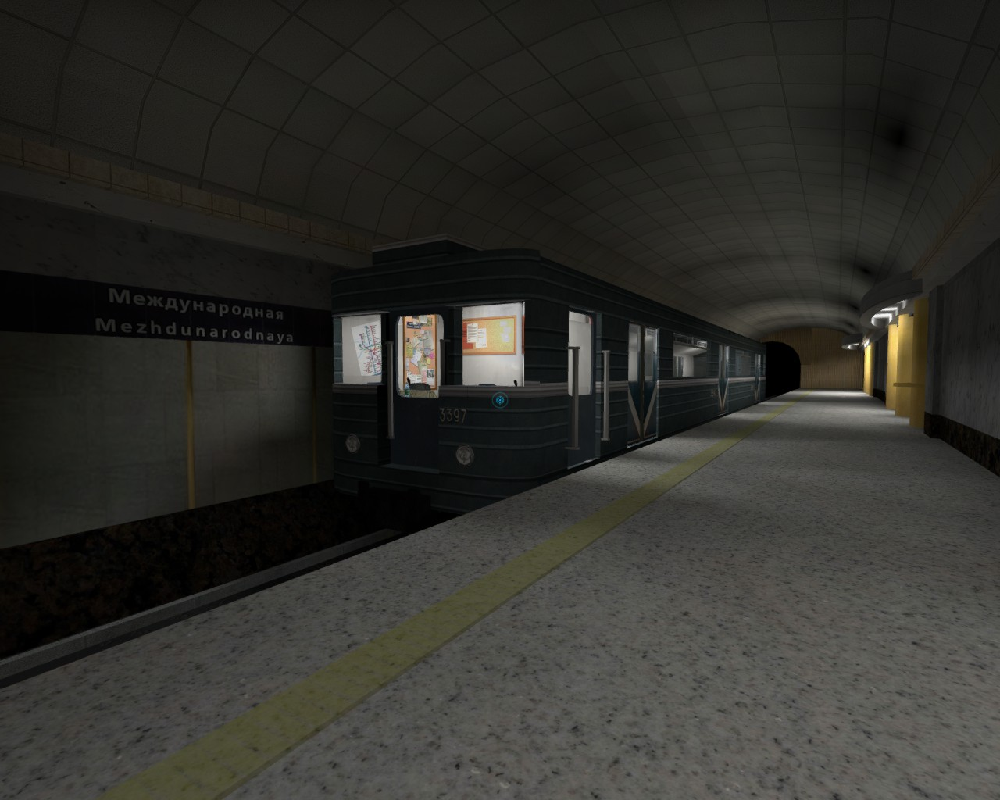
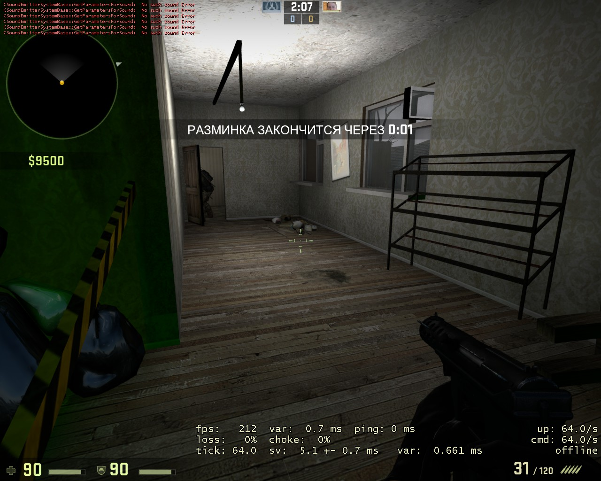
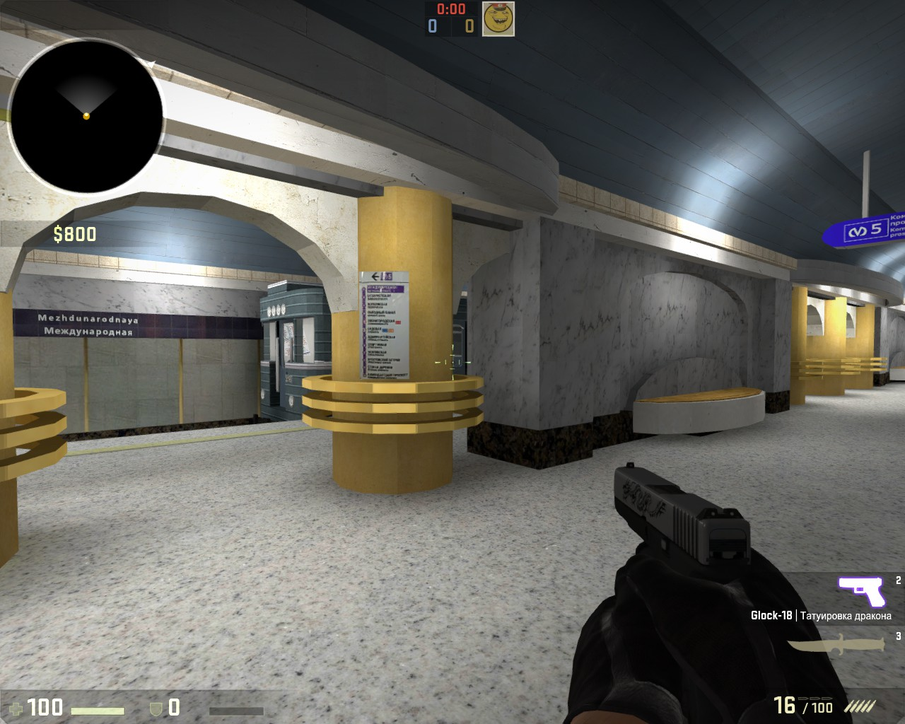
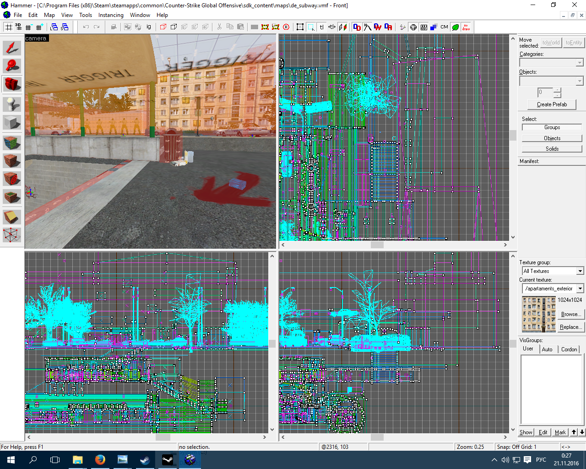
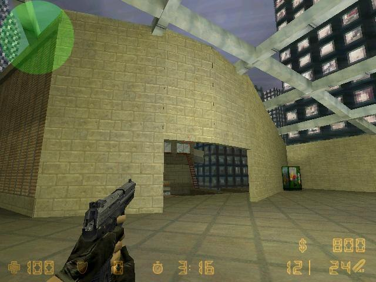
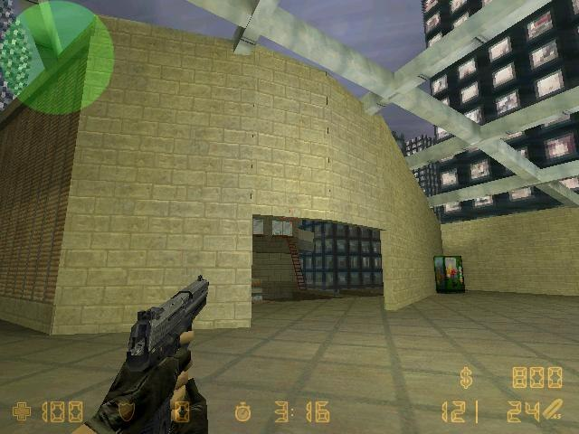

Трехмерная графика и моделирование
У меня имеется трехлетний опыт разработки и проектирования уровней для игр, использующих движки GoldSrc и Source, и их улучшенных версий. Данные движки наиболее часто используются непосредственно компанией-разработчиком - Valve. Поэтому наиболее оптимизированная среда разработки для игровых уровней - Valve Hammer Editor, Model Viewer, Face Poser, VTFEdit, pakRAT. С их помощью можно воплотить в реальность свои дизайнерские мысли в следующих играх:
- Counter-Strike: Global Offensive
- Counter-Strike 1.6
- Dota 2
- Team Fortress 2
- Left 4 Dead 2
На самом деле список этих игр намного шире. А уж количество модификаций не поддается счету. За то время, что я разрабатывал уровни для игр, я параллельно освоил технологии создания спрайтов, иконок, скриптов, значительно расширил свои навыки работы в Adobe Photoshop, Adobe Premiere, а также Audacity. Помимо этого, в университете полгода изучал Компас-3D V16.
Галерея
   
 

 This site is powered by:
This site is powered by: